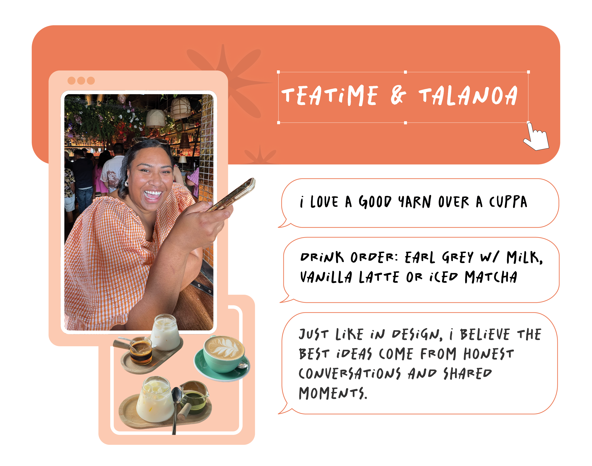

About
Projects
Resume

🌱 Who I Am
Rotuman & Fijian designer based in Aotearoa
Extrovert who thrives in team environments
Passionate about people, community, and connection
🛠️ How I Work
Big on planning, structure, and making things efficient
Love being useful and solving real-world problems
Strong communicator who enjoys collaboration and explaining ideas clearly
🌏 What I Love
Exploring new places and trying new foods
Documenting life through photos and storytelling
Hanging out with friends, whānau, and anyone keen for a good laugh
Contact me
filololo.design@gmail.com